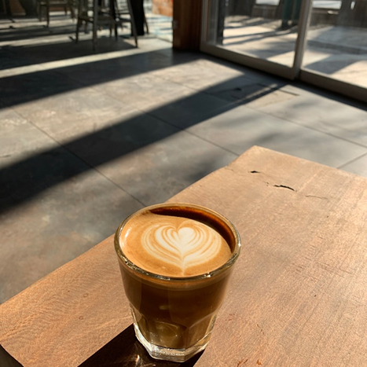
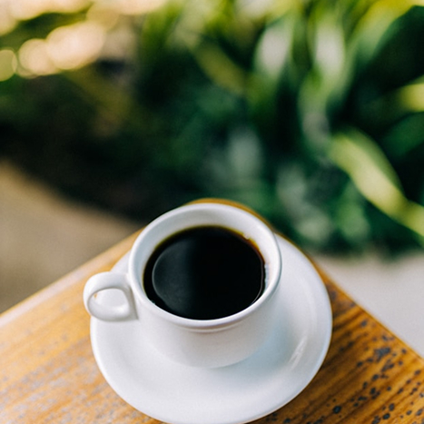

많이 찾는 제품
영양 성분
Soft Latte
부드러운 우유와 에스프레소의 균형 잡힌 조화 편안하게 즐기기 좋은 데일리 라떼
| 성분명 | 함량 |
|---|---|
| 칼로리 (Calories) | 180kcal |
| 나트륨 (Sodium) | 110 mg |
| 탄수화물 (Carbohydrates) | 15 g |
| 지방 (Total Fat) | 9 g |
| 단백질 (Protein) | 9 g |
| 카페인 (Caffeine) | 75 ~ 150 mg |
리뷰
CoffeeLover_99
2026년 3월 15일

매일 아침의 활력소


아침마다 이 클래식 아메리카노 한 잔으로 하루를 시작하는데, 정말 이름값을 하는 맛입니다. 원두의 탄 맛이 강하지 않고 적당히 고소하면서도 끝맛이 깔끔해서 매일 마셔도 질리지 않아요. 특히 크레마가 층층이 살아있어서 처음 한 모금 마실 때의 그 부드러운 풍미가 일품입니다. 산미가 너무 강하지 않은 원두를 선호하시는 분들이라면 호불호 없이 누구나 좋아할 만한 밸런스예요. 양도 넉넉하고 온도 유지도 잘 되어서 업무 중에 천천히 즐기기에도 아주 만족스럽습니다.
Minimalist_Jake
2026년 3월 18일
가성비와 퀄리티를 동시에 잡은 선택
요즘 커피 가격이 부담스러운데 이 제품은 가격 대비 원두의 퀄리티가 상당히 훌륭해서 놀랐습니다. 얼음이 녹아도 커피 맛이 너무 연해지지 않고 묵직한 바디감이 끝까지 유지되는 점이 가장 마음에 들어요. 가끔 저가형 커피에서 느껴지는 특유의 텁텁함이 전혀 없고, 목 넘김이 굉장히 부드러운 편입니다. 별 하나를 뺀 이유는 개인적으로 아주 약간의 산미를 더 선호하기 때문이지만, 대중적인 맛으로는 최고예요. 디저트와 함께 먹었을 때 단맛을 싹 잡아주는 깔끔함 덕분에 오후 간식 시간에 자주 찾게 됩니다.
Espresso_Holic
2026년 3월 21일
진한 풍미가 느껴지는 진정한 블랙 커피

여러 브랜드의 아메리카노를 마셔봤지만, 여기 클래식 아메리카노만큼 기본에 충실한 곳은 드문 것 같아요. 원두 로스팅이 아주 잘 되어서 초콜릿 같은 쌉싸름한 향이 입안 가득 퍼지는 게 정말 매력적입니다. 물과 에스프레소의 비율이 황금비율이라 그런지 너무 진해서 쓰거나 너무 연해서 밍밍하지 않고 딱 좋습니다. 아이스로 마셔도 향이 죽지 않고 살아있어서 무더운 날씨에 시원하게 갈증 해소하기에 이만한 게 없네요. 커피 본연의 진한 맛을 즐기고 싶은 분들께는 고민하지 말고 이 메뉴를 선택하시라고 추천하고 싶습니다.